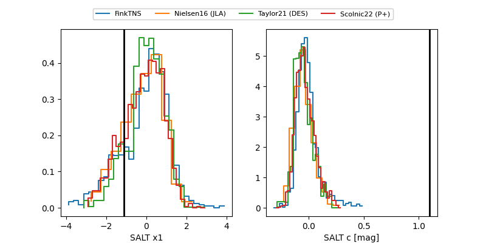

FINK: ZTF25abmsmeg
Lasair: ZTF25abmsmeg
ALeRCE: ZTF25abmsmeg
TNS: 2025vzq
YSE: 2025vzq
ZTF25abmsmeg (ztf,fink)
2025vzq (tns,yse)
ATLAS25kqi (atlas)
PS25hld (panstarrs)
equatorial (ra, dec) = (349.7700,-8.47764)
galactic (l, b) = (69.1108,-61.27916)

last atlasc=17.07, atlaso=16.45, ps1::w=16.36, ztfg=18.06, ztfr=16.43
3 atlasc, 11 atlaso, 2 ps1::w, 8 ztfg, 9 ztfr detections